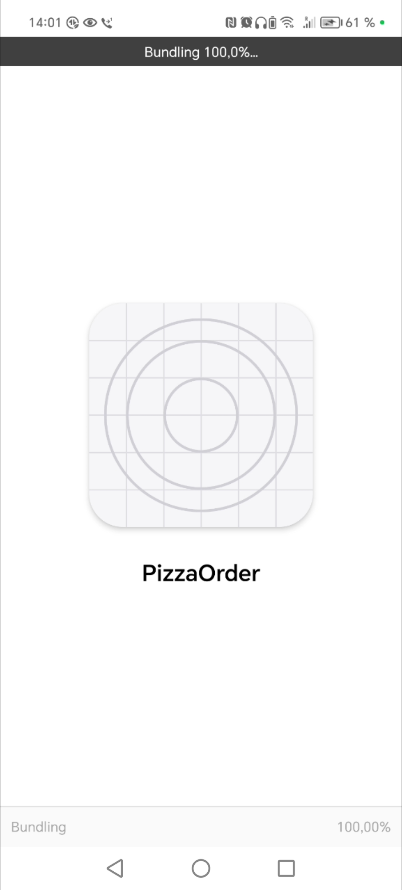
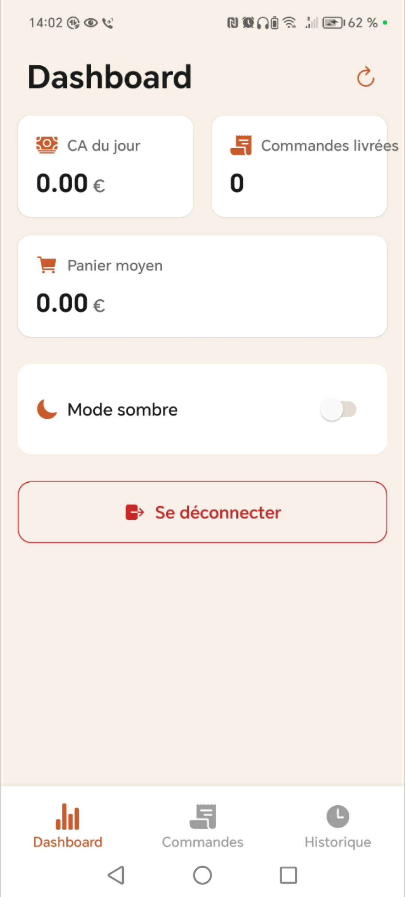
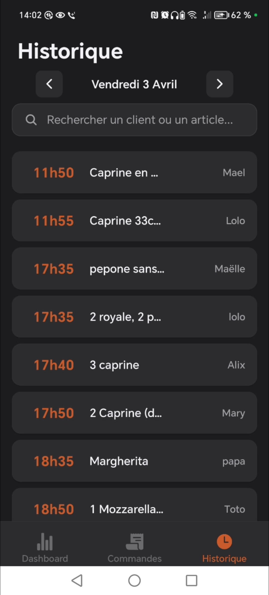
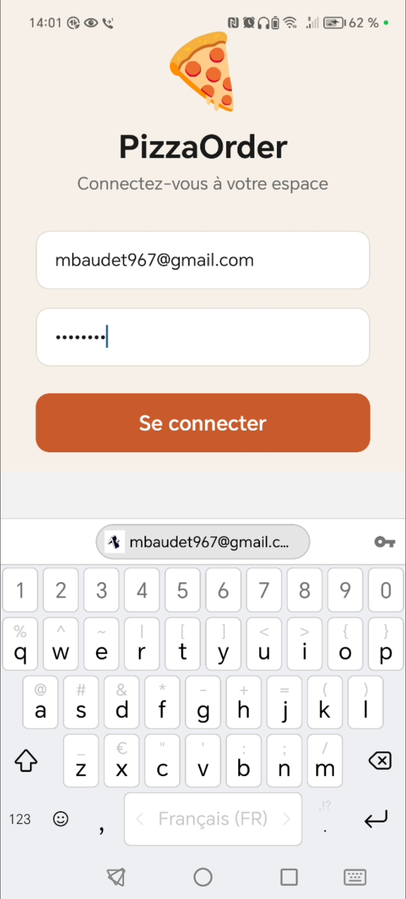
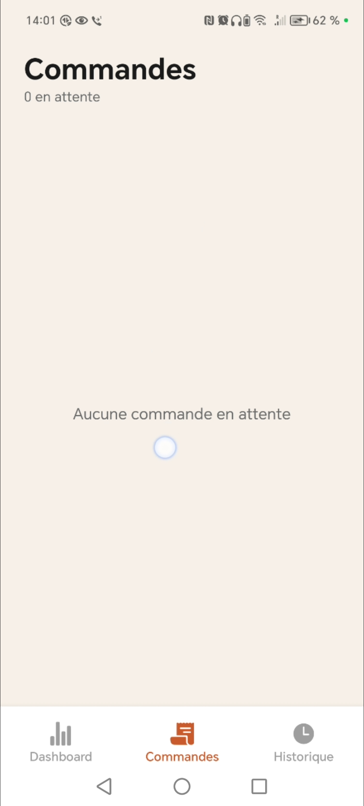

Mon projet
Les vendredis et samedis soir, les pizzerias sont dans le rush. Chaque appel manqué, c'est une commande de perdue.
J'ai donc créé un système complet où un agent vocal IA prend en charge les appels entrants 24h/24 pour prendre les commandes à emporter, gérer les réservations et répondre aux questions fréquentes.
Si la situation dépasse l'IA, l'appel est transféré à un humain.
Les gérants pilotent tout depuis une application mobile dédiée.
Ce que j'ai construit :
- Un agent vocal conversationnel (Retell AI)
- Une application mobile pour les gérants (React Native)
- Des workflows qui connectent l'agent vocal et l'app (n8n)
- Un backend complet (Supabase)





Plusieurs fonctionnalités ont été ajoutées depuis comme la possibilité de régler la cadence (nombre de pizzas/10 minutes) ou encore de pouvoir activer et désactiver les produits afin que le preneur de commande IA sache la disponibilité en temps réel des produits.
Projet développé personnellement de A à Z dans une logique de déploiement en condition réelle. MVP fonctionnel.